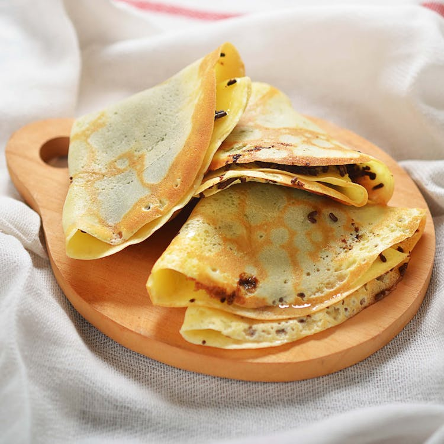

Crepes Recipe

Simple crepe for your breakfast
Ingredients
- 2 large eggs
- 1/2 cup of milk
- 1/2 cup of water
- 1/4 teaspoon of salt
- 1 cup all purpose flour
- 2 tablespoons of melted butter
Steps
-
Whisk eggs, milk, water, and salt together in a large mixing bowl; add
flour and butter and whisk vigorously until smooth.
-
Heat a lightly oiled griddle or frying pan over medium-high heat. Pour
or scoop the batter onto the pan, using approximately 1/4 cup for each
crêpe. Tilt the pan with a circular motion so that the batter coats the
surface evenly.
-
Cook until the top of the crêpe is no longer wet and the bottom has
turned light brown, 1 to 2 minutes. Run a spatula around the edge of the
skillet to loosen the crêpe; flip and cook until the other side has
turned light brown, about 1 minute more. Serve hot.